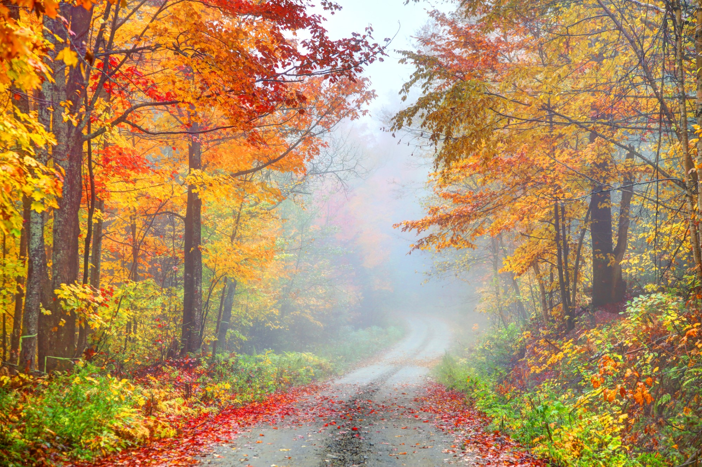

Fall, also known as Autumn, is the season after Summer and is where the days get shorter and colder, and everything turns brown. The reason it is called fall is because it is when the leaves fall off the trees and rest before winter hits. According to usnews.com one of the best fall vacation destinations is the Grand Canyon because of the nice temperatures and low hotel rates.
